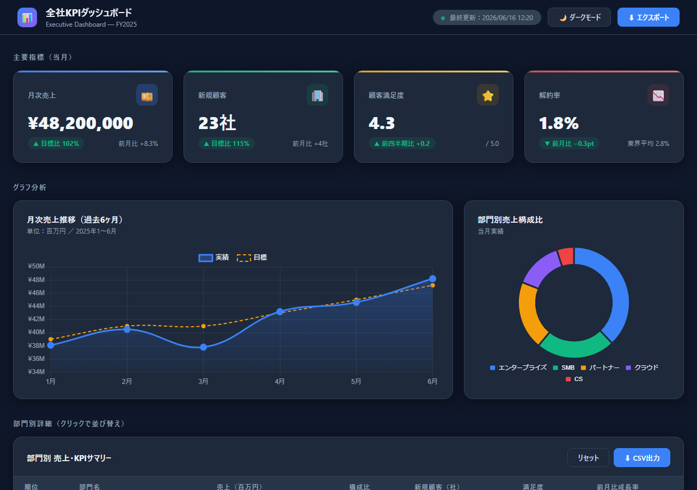

第5章 Excel的な仕事をHTMLで再発明する
📂 本章のサンプルファイル:ch05_dashboard.html
ブラウザで開くと、本章で解説するHTMLコンテンツを実際に操作できます。
本書サポートサイトからダウンロードしてください。
5-1 Excelの「何」をHTMLで代替するのか
あなたのExcelは、何をしていますか？
少し立ち止まって考えてみてください。今日あなたが開いたExcelのファイルは、何のために使いましたか。数字を計算するために使いましたか。データを一覧で眺めるために使いましたか。あるいは、上司や同僚に何かを「見せる」ために使いましたか。
この問いは、案外難しいものです。Excelはあまりにも万能なツールなので、「計算もできるし、一覧管理もできるし、グラフも作れる」という答えが返ってくることが多いのです。しかしその万能さこそが、Excelの弱点でもあります。
Excelの三つの顔
Excelが職場で担っている役割は、大きく三つに分けることができます。
第一の顔：計算ツール
数値を入力し、数式で加工し、集計します。これがExcelの原点です。SUM、VLOOKUP、IF関数——複雑な計算ロジックをセル上で組み立て、財務モデルや予算管理、売上予測などに使われています。この用途ではExcelは本領を発揮します。スプレッドシートという形式そのものが、「セルに式を書いて計算する」という作業のために設計されているからです。
第二の顔：一覧管理ツール
顧客名簿、在庫リスト、プロジェクト管理表——行と列でデータを整理する、いわゆる「リスト管理」の使い方です。Accessのようなデータベースソフトほど厳密ではありませんが、手軽に使えることから多くの職場でこの用途に使われています。
第三の顔：報告・共有ツール
グラフを作り、色を付け、結果を「見せる」ために使うExcelです。月次レポートの集計結果をグラフで示す、KPI（重要業績評価指標）の達成状況を表で見せる——「出力物」として使う使い方です。
どの顔がHTMLに向いているか
この三つを並べたとき、HTMLへの移行に最も向いているのは第三の顔、すなわち「報告・共有」の用途です。
計算はExcelの独壇場です。複数のシートにまたがるVLOOKUPや、複雑な条件付き集計を、HTMLで再現することは現実的ではありません。一覧管理も、リアルタイムの編集や複数人でのデータ入力が必要であれば、ExcelやGoogle スプレッドシートのほうが適しています。
しかし「見せる」という行為は、HTMLが圧倒的に得意とする領域です。
考えてみてください。Excelで作ったグラフは、拡大するとぼやけます。スマートフォンで開くと崩れます。検索ボックスはありません。フィルターは機能するものの、URLで共有したり、ブラウザのブックマークに登録したりはできません。
HTMLにはこれらすべての問題が存在しません。
「計算はExcel、見せることはHTML」——この分業こそが、この章の核心です。
Excelで集計した結果をHTMLに渡します。この流れを設計することで、それぞれのツールが最も得意なことに集中できるようになります。財務部門が精緻に組み上げた数値モデルを壊す必要はありません。ただ、その結果を「誰かに見せる」フェーズだけを、HTMLに任せるのです。
〔コラム〕 なぜExcelダッシュボードは見づらいのか
Excelで「ダッシュボード」を作ったことがある方は多いと思います。グラフを並べ、条件付き書式で色を付け、見栄えを整える作業は、慣れた方なら数時間でこなせます。しかし完成したものを改めて眺めると、どこか窮屈で、洗練されていない印象が残ることはないでしょうか。
これはExcelの限界ではなく、「使い方のミスマッチ」によるものです。Excelのセルは「数値を入力する場所」として設計されており、自由なレイアウトや豊富なビジュアル表現は本来の設計思想にありません。見づらいExcelダッシュボードは、ハンマーで壁に絵を描こうとした結果です。道具を間違えているだけで、あなたのセンスの問題ではありません。
5-2 一覧・リストをHTMLで作る
「あの表、検索できたらいいのに」という声を聞いたことはありませんか
💡 AIへの依頼例
【目的】社員のスキルマップをHTMLの表で作りたい。名前・部署・スキルで瞬時に絞り込めるようにしたい
【含める要素】氏名・部署・主なスキル・レベルの4列、リアルタイム検索ボックス（入力した瞬間に表が絞り込まれる）、列ヘッダーをクリックした昇順・降順ソート、行のホバー時のハイライト
【スタイル】ビジネス向け、シンプルで視認性の高いテーブルデザイン
【出力形式】完全なHTMLファイルとして出力してください
このプロンプトをそのままClaude/ChatGPT/Geminiに貼り付けて使えます。
職場のどこかに、「見るだけで更新は誰かがやる」という表が存在しないでしょうか。社内のメンバーリスト、取引先の連絡先一覧、プロジェクト別のタスク管理表——誰もが使うけれど、誰も管理に喜びを感じていない表です。
Excelでこうした表を作ると、いくつかの問題が生じます。開くたびに読み込みが遅い、スマートフォンでは見づらい、フィルターの設定が外れる、最新版がどれかわからなくなる……。
HTMLの表は、これらの問題を根本から解決する可能性を持っています。
検索・ソート・フィルター機能付きの表
HTMLで作る表の最大の強みは、ブラウザ上でリアルタイムに動作するインタラクション（操作への反応）を持てることです。テキストボックスに文字を入力すると、瞬時に一致する行だけが表示されます。列のヘッダーをクリックすると、その列で並び替えられます。こうした機能を、生成AIに依頼することで実現できます。
たとえば、社員のスキルマップをExcelで管理していたとします。「Aさんのスキル」「B部門のメンバー」「Pythonができる人」を調べるたびに、Excelのフィルターを設定し直す手間があります。HTMLに変換し、検索ボックスを一つ追加するだけで、この手間はほぼゼロになります。
以下は、生成AIに依頼して作成した「検索機能付きの社員スキル一覧表」の例です。
<!DOCTYPE html>
<html lang="ja">
<head>
<meta charset="UTF-8">
<title>社員スキルマップ</title>
<style>
body { font-family: sans-serif; padding: 20px; background: #f5f5f5; }
h1 { font-size: 1.4rem; color: #333; }
#searchBox {
width: 100%; padding: 10px;
font-size: 1rem; border: 1px solid #ccc;
border-radius: 6px; margin-bottom: 16px;
}
table { width: 100%; border-collapse: collapse; background: white; }
th {
background: #2c5282; color: white;
padding: 10px 14px; text-align: left;
cursor: pointer; user-select: none;
}
th:hover { background: #2a4a7f; }
td { padding: 10px 14px; border-bottom: 1px solid #e2e8f0; }
tr:hover { background: #ebf4ff; }
</style>
</head>
<body>
<h1>社員スキルマップ</h1>
<input type="text" id="searchBox" placeholder="名前・部署・スキルで検索...">
<table id="skillTable">
<thead>
<tr>
<th onclick="sortTable(0)">氏名</th>
<th onclick="sortTable(1)">部署</th>
<th onclick="sortTable(2)">主なスキル</th>
<th onclick="sortTable(3)">レベル</th>
</tr>
</thead>
<tbody>
<tr><td>田中 明子</td><td>営業部</td><td>Excel・PowerPoint・交渉術</td><td>上級</td></tr>
<tr><td>佐藤 健一</td><td>技術部</td><td>Python・データ分析・SQL</td><td>中級</td></tr>
<tr><td>山田 花子</td><td>マーケティング部</td><td>Webデザイン・GA4・SEO</td><td>上級</td></tr>
<tr><td>鈴木 大輔</td><td>人事部</td><td>採用・制度設計・評価制度</td><td>中級</td></tr>
<tr><td>伊藤 裕美</td><td>技術部</td><td>Java・テスト設計・AWS</td><td>上級</td></tr>
</tbody>
</table>
<script>
// 検索機能
document.getElementById('searchBox').addEventListener('input', function() {
const keyword = this.value.toLowerCase();
document.querySelectorAll('#skillTable tbody tr').forEach(row => {
const text = row.textContent.toLowerCase();
row.style.display = text.includes(keyword) ? '' : 'none';
});
});
// ソート機能
function sortTable(col) {
const tbody = document.querySelector('#skillTable tbody');
const rows = Array.from(tbody.querySelectorAll('tr'));
rows.sort((a, b) => {
const aText = a.cells[col].textContent;
const bText = b.cells[col].textContent;
return aText.localeCompare(bText, 'ja');
});
rows.forEach(row => tbody.appendChild(row));
}
</script>
</body>
</html>このコードを生成AIに依頼するときは、「社員スキルマップをHTMLの表で作って。名前・部署・スキル・レベルの列を持ち、リアルタイム検索と列クリックでのソートができるようにして」と伝えるだけです。コードの細部を理解する必要はありません。
カード型レイアウトで情報を整理する
💡 AIへの依頼例
【目的】プロジェクト管理表をカード型レイアウトのHTMLページに変換したい
【含める要素】プロジェクト名・担当者・期限・進捗率のカード、進捗バー（視覚的な棒グラフ）、ステータスバッジ（「進行中」緑・「要確認」黄・「遅延」赤）、カードのフィルタリングボタン（ステータス別に絞り込み）
【スタイル】ビジネス向け、カードに影を付けた洗練されたレイアウト
【出力形式】完全なHTMLファイルとして出力してください
このプロンプトをそのままClaude/ChatGPT/Geminiに貼り付けて使えます。
Excelの表が「行×列」という形式に縛られているのに対し、HTMLは「カード型レイアウト」という全く異なる表現を使うことができます。
カード型とは、各情報を小さなカード状のブロックとして並べるレイアウトです。人名鑑、製品カタログ、プロジェクト一覧など、「個々の対象をひとつのまとまりとして見せたい」場面に特に有効です。
たとえばプロジェクト管理表を例に取りましょう。Excelでは、プロジェクト名・担当者・期限・進捗率を列で管理します。しかしHTMLのカード型レイアウトに変換すると、各プロジェクトが独立したカードになり、担当者の名前、進捗バー、ステータスバッジが視覚的に整理されます。
<!DOCTYPE html>
<html lang="ja">
<head>
<meta charset="UTF-8">
<title>プロジェクト一覧</title>
<style>
body { font-family: sans-serif; padding: 24px; background: #f0f4f8; }
h1 { font-size: 1.4rem; color: #2d3748; margin-bottom: 20px; }
.cards { display: flex; flex-wrap: wrap; gap: 16px; }
.card {
background: white; border-radius: 10px;
padding: 20px; width: 280px;
box-shadow: 0 2px 6px rgba(0,0,0,0.08);
}
.card h2 { font-size: 1rem; color: #2d3748; margin: 0 0 8px; }
.meta { font-size: 0.85rem; color: #718096; margin-bottom: 12px; }
.progress-bar {
background: #e2e8f0; border-radius: 999px;
height: 8px; overflow: hidden; margin-bottom: 8px;
}
.progress-fill { height: 100%; border-radius: 999px; }
.label { font-size: 0.8rem; color: #4a5568; }
.badge {
display: inline-block; padding: 2px 10px;
border-radius: 999px; font-size: 0.78rem;
font-weight: bold; margin-top: 10px;
}
.badge.green { background: #c6f6d5; color: #276749; }
.badge.yellow { background: #fefcbf; color: #744210; }
.badge.red { background: #fed7d7; color: #9b2c2c; }
</style>
</head>
<body>
<h1>プロジェクト一覧</h1>
<div class="cards">
<div class="card">
<h2>新CRM導入プロジェクト</h2>
<div class="meta">担当：田中 明子 ／ 期限：2025年9月30日</div>
<div class="progress-bar">
<div class="progress-fill" style="width:72%; background:#48bb78;"></div>
</div>
<div class="label">進捗 72%</div>
<span class="badge green">進行中</span>
</div>
<div class="card">
<h2>社内ナレッジDB構築</h2>
<div class="meta">担当：佐藤 健一 ／ 期限：2025年10月15日</div>
<div class="progress-bar">
<div class="progress-fill" style="width:40%; background:#ecc94b;"></div>
</div>
<div class="label">進捗 40%</div>
<span class="badge yellow">要確認</span>
</div>
<div class="card">
<h2>採用ページリニューアル</h2>
<div class="meta">担当：山田 花子 ／ 期限：2025年8月31日</div>
<div class="progress-bar">
<div class="progress-fill" style="width:15%; background:#fc8181;"></div>
</div>
<div class="label">進捗 15%</div>
<span class="badge red">遅延</span>
</div>
</div>
</body>
</html>このレイアウトを見たとき、Excelの行×列表示と比べて、どちらが「状況を把握しやすいか」を感じていただけるはずです。
ステータス管理・進捗表示の視覚化
多くのExcel管理表で、「○」「×」「△」「完了」「未着手」「進行中」といった記号や文字でステータスを管理しています。この表現を、HTMLでは色付きバッジやプログレスバーに置き換えることができます。
視覚的な色分けは、人間の情報処理に直接訴えかけます。「×」という文字を読むより、赤いバッジを目で見るほうが、問題の深刻さが即座に伝わります。これは見た目の話ではなく、情報伝達の効率の話です。
Excelの条件付き書式でも似たことはできますが、HTMLのバッジは任意のテキストと色の組み合わせを自由に設計でき、スマートフォンでも崩れません。
5-3 ダッシュボードをHTMLで作る
あなたのチームに「全員が同じ画面を見る場所」はありますか
毎週のチームミーティングで、誰かが画面共有しながらExcelを開いている——そんな光景は多くの職場で見られます。KPIの進捗を確認するために、担当者がExcelを手動で更新し、会議直前にメールで送ります。受け取った側はそのExcelを開き、自分のシートに集計し直す……。
このプロセスに費やしているエネルギーを、HTMLダッシュボードは大幅に削減できます。
KPIカード・グラフ・表を組み合わせたページ構成
💡 AIへの依頼例
【目的】月次チームKPIダッシュボードをHTMLで作りたい。ページを開いたときに数値がカウントアップするアニメーションを入れたい
【含める要素】売上・新規顧客数・タスク完了率の3枚のKPIカード（ページ読み込み時に0から目標値までカウントアップするアニメーション）、Chart.jsを使った月次売上推移の折れ線グラフ、部門別実績の詳細表（達成率に応じて色が変わる）
【スタイル】ビジネス向け、明るく視認性の高いダッシュボードデザイン
【出力形式】完全なHTMLファイルとして出力してください
このプロンプトをそのままClaude/ChatGPT/Geminiに貼り付けて使えます。
ビジネスダッシュボードの典型的なレイアウトは、次の三要素で構成されます。
- KPIカード：単一の重要指標を大きな数字で表示するブロックです。「今月の売上：1,230万円」「新規顧客：47件」といった数値を一目でわかるよう表示します。
- グラフ：時系列の変化や比較を視覚化する部分です。折れ線グラフ、棒グラフ、円グラフなど用途に応じて使い分けます。
- 詳細表：グラフの背後にある詳細なデータを表で補足します。グラフで大局を掴み、表で詳細を確認する——この二段構えが情報密度と可読性を両立させます。
以下は、Chart.js（チャートジェイエス）ライブラリを使った月次ダッシュボードの例です。Chart.jsとは、ブラウザ上でグラフを描画するための無料のJavaScriptライブラリで、生成AIとの組み合わせで簡単に利用できます。
<!DOCTYPE html>
<html lang="ja">
<head>
<meta charset="UTF-8">
<title>月次チームダッシュボード</title>
<script src="https://cdn.jsdelivr.net/npm/chart.js"></script>
<style>
* { box-sizing: border-box; }
body { font-family: sans-serif; background: #f7fafc; padding: 24px; color: #2d3748; }
h1 { font-size: 1.5rem; margin-bottom: 24px; }
/* KPIカード */
.kpi-row { display: flex; gap: 16px; margin-bottom: 24px; }
.kpi-card {
background: white; border-radius: 10px;
padding: 20px 24px; flex: 1;
box-shadow: 0 2px 6px rgba(0,0,0,0.07);
}
.kpi-label { font-size: 0.85rem; color: #718096; margin-bottom: 6px; }
.kpi-value { font-size: 2rem; font-weight: bold; color: #2c5282; }
.kpi-change { font-size: 0.82rem; margin-top: 4px; }
.up { color: #276749; }
.down { color: #c53030; }
/* グラフ */
.chart-area {
background: white; border-radius: 10px;
padding: 24px; margin-bottom: 24px;
box-shadow: 0 2px 6px rgba(0,0,0,0.07);
}
canvas { max-height: 260px; }
/* 詳細表 */
.table-area {
background: white; border-radius: 10px;
padding: 24px;
box-shadow: 0 2px 6px rgba(0,0,0,0.07);
}
table { width: 100%; border-collapse: collapse; }
th { background: #ebf4ff; color: #2c5282; padding: 10px 14px; text-align: left; }
td { padding: 10px 14px; border-bottom: 1px solid #e2e8f0; }
</style>
</head>
<body>
<h1>月次チームダッシュボード（2025年8月）</h1>
<!-- KPIカード -->
<div class="kpi-row">
<div class="kpi-card">
<div class="kpi-label">今月の売上</div>
<div class="kpi-value">1,230万円</div>
<div class="kpi-change up">▲ 先月比 +8.5%</div>
</div>
<div class="kpi-card">
<div class="kpi-label">新規顧客数</div>
<div class="kpi-value">47件</div>
<div class="kpi-change up">▲ 先月比 +12件</div>
</div>
<div class="kpi-card">
<div class="kpi-label">タスク完了率</div>
<div class="kpi-value">83%</div>
<div class="kpi-change down">▼ 先月比 -3pt</div>
</div>
</div>
<!-- 折れ線グラフ -->
<div class="chart-area">
<h2 style="font-size:1rem; margin-bottom:16px;">月次売上推移（万円）</h2>
<canvas id="salesChart"></canvas>
</div>
<!-- 詳細表 -->
<div class="table-area">
<h2 style="font-size:1rem; margin-bottom:16px;">部門別実績</h2>
<table>
<thead>
<tr><th>部門</th><th>売上目標</th><th>実績</th><th>達成率</th></tr>
</thead>
<tbody>
<tr><td>東日本営業</td><td>500万円</td><td>532万円</td><td>106%</td></tr>
<tr><td>西日本営業</td><td>480万円</td><td>461万円</td><td>96%</td></tr>
<tr><td>オンライン</td><td>200万円</td><td>237万円</td><td>119%</td></tr>
</tbody>
</table>
</div>
<script>
const ctx = document.getElementById('salesChart').getContext('2d');
new Chart(ctx, {
type: 'line',
data: {
labels: ['3月', '4月', '5月', '6月', '7月', '8月'],
datasets: [{
label: '売上（万円）',
data: [980, 1050, 1120, 1080, 1134, 1230],
borderColor: '#4299e1',
backgroundColor: 'rgba(66,153,225,0.1)',
fill: true,
tension: 0.3,
pointRadius: 5,
}]
},
options: {
responsive: true,
plugins: { legend: { display: false } },
scales: { y: { beginAtZero: false } }
}
});
</script>
</body>
</html>このコードを見て「難しそう」と感じても大丈夫です。実際の業務で使うときは、このコードをゼロから書く必要はありません。生成AIに「月次売上・新規顧客数・タスク完了率の3つのKPIカードと、売上の折れ線グラフ、部門別の実績表を含むHTMLダッシュボードを作って。Chart.jsを使って」と依頼するだけで、ほぼ同等のものが生成されます。
Chart.jsを使ったグラフの基本
💡 AIへの依頼例
【目的】Chart.jsを使って部門別売上と達成率を視覚化するHTMLページを作りたい
【含める要素】棒グラフ（部門別売上、X軸に部門名・Y軸に売上金額）、折れ線グラフ（月次推移）、円グラフ（チャネル別売上構成比）、グラフをクリックすると詳細情報がポップアップ表示
【スタイル】ビジネス向け、青系のカラーパレットで統一感のある配色
【出力形式】完全なHTMLファイルとして出力してください
このプロンプトをそのままClaude/ChatGPT/Geminiに貼り付けて使えます。
Chart.jsは、HTMLファイル内に一行のコードを書くだけで読み込めるグラフライブラリです（<script src="https://cdn.jsdelivr.net/npm/chart.js"></script> の一行です）。棒グラフ、折れ線グラフ、円グラフ、レーダーチャートなど多様なグラフタイプを持ち、グラフをクリックするとツールチップ（詳細情報の吹き出し）が表示されるインタラクション機能も備えています。
ビジネスで最もよく使われるのは以下の三種類です。
- 折れ線グラフ（line）：時系列の変化を追うときに最適です。売上推移、アクセス数変化など
- 棒グラフ（bar）：カテゴリ間の比較をするときに最適です。部門別実績、製品別売上など
- 円グラフ（doughnut / pie）：構成比を見せるときに最適です。チャネル別比率、カテゴリ別割合など
生成AIに依頼するとき、「Chart.jsの棒グラフで、X軸に月、Y軸に売上金額、色は青系で」という指示レベルで十分です。生成AIが適切なコードを生成してくれます。
データをJSONで持ち、HTMLで表示する分離の発想
ここで少し発想の話をします。上記のコードをよく見ると、data: [980, 1050, 1120, 1080, 1134, 1230] という部分があります。これがグラフに表示される数値そのものです。
Excelでは、数値とその表示（グラフ）が同じファイルの中に混在しています。数値を変えれば自動的にグラフが変わるのは便利ですが、「数値の部分」と「グラフの設計の部分」が強く結びついているため、柔軟な管理が難しくなります。
HTMLベースのアプローチでは、データ（何を表示するか）と表示（どう見せるか）を分離することが可能です。
JSONとは「JavaScript Object Notation（ジャバスクリプト・オブジェクト・ノーテーション）」の略で、データを記述するためのシンプルな書式です。難しく聞こえますが、要するに「データをテキストで書いたもの」です。
{
"month": ["3月", "4月", "5月", "6月", "7月", "8月"],
"sales": [980, 1050, 1120, 1080, 1134, 1230]
}このように数値をテキストファイルとして別に管理しておき、HTMLがそれを読み込んでグラフを描画する設計を取ることで、「数値の更新者」と「デザインの設計者」を分けることができます。経理部門が数値ファイルを更新すれば、デザイン担当が手を加えなくても表示が自動的に変わります——これが「データと表示の分離」の実際の価値です。
すぐにこの設計を実装する必要はありませんが、「将来的にはそういう仕組みができる」という認識を持っておくことは、業務設計の視野を広げます。
5-4 Excelから卒業するための移行ステップ
「全部変えなくていい」という前提から始める
ここまでの節を読んで、「便利そうだけど、今あるExcelをすべて作り直すのは大変だ」と感じた方もいるかもしれません。その感覚は正しいです。既存のExcelをすべて捨ててHTMLに移行しようとすれば、コストと混乱は計り知れません。
この章が提案するのは、そのような急激な変革ではありません。小さく始め、少しずつ拡張する——この漸進的なアプローチが、現実の職場での変化を成功させる道です。
現実的な四つの移行ステップ
ステップ1（第1〜2週）：既存の表を一つだけHTMLに変換して共有する
まず一つ選んでください。「あのメンバーリスト、もっと使いやすくなったらいいのに」と思っている表が、どの職場にも一つはあるはずです。その表のデータをコピーして生成AIに渡し、「検索機能付きのHTMLの表に変換して」と依頼します。完成したら同僚に試してもらいましょう。
このステップでは、自分自身がHTMLの作成プロセスを体験することと、周囲のフィードバックを得ることが目的です。
ステップ2（第3〜4週）：月次レポートのグラフ部分をHTMLダッシュボードにする
毎月作っているExcelレポートのうち、グラフが含まれる部分だけをHTML化します。Excelでの計算と集計はそのまま継続し、最終的な「見せる部分」だけをHTMLに切り出すイメージです。KPIカード数枚と簡単なグラフ一つから始めれば十分です。
ステップ3（2〜3ヶ月後）：更新の多い一覧管理をHTMLに移行する
次は更新頻度が高い一覧表——在庫管理表やタスク管理表など——をHTMLに移行します。このタイミングから、「データをJSONで管理する」という分離の設計を試してみるのが理想的です。
ステップ4（半年後以降）：チーム共有のダッシュボードを設ける
チームメンバー全員がブラウザで開ける共有ダッシュボードを設置します。ここまで来れば、「毎週のミーティングで誰かがExcelを開く」という習慣は自然に変わっています。
ExcelとHTMLは「共存する」
この四ステップのどの段階においても、ExcelをゼロにしてHTMLだけにする必要はありません。複雑な財務計算、既存のマクロ、数式が緻密に絡み合ったモデル——これらはExcelのまま保つのが正解です。
「Excelを否定するためにHTMLを使う」のではなく、「ExcelとHTMLが互いの弱点を補い合う」関係を設計することが、この章の本質的なメッセージです。
最終的な姿は、「Excelで計算し、HTMLで伝える」という二層構造です。ツールを変えるのではなく、仕事の流れを再設計する——この視点から、あなたの今の仕事を見直してみてください。
読者への問いかけ
あなたが毎月作るExcelレポートのうち、「計算している部分」と「見せている部分」はそれぞれどのくらいを占めていますか。もし「見せる部分だけHTMLに移せたら」と想像してみてください。どの作業が楽になり、どのくらいの時間が生まれるでしょうか。
また、あなたのチームで「あの表、検索できたらいいのに」と思っているリストはありますか？そのリストは、おそらくこの章で紹介した方法で1時間以内にHTMLに変換できます。

ch05_dashboard.html
本書サポートサイトよりダウンロードし、ブラウザで開いてご確認ください。
まとめ
この章では、Excelが担っている三つの役割（計算・一覧管理・ダッシュボード）を整理し、「見せる・共有する」という役割をHTMLに切り出すという分業の設計を提案しました。
主なポイントを振り返ります。
- Excelの計算は残す：複雑な数式やVLOOKUPはExcelの仕事です。無理にHTMLに移す必要はありません
- 見せるためのHTMLを作る：検索・ソート・フィルター付きの表、カード型レイアウト、KPIダッシュボード——これらはHTMLが得意とする表現です
- Chart.jsを生成AIに任せる：グラフの作成は生成AIに依頼すれば大丈夫です。コードを書く必要はありません
- データと表示を分けることを意識する：Excelに閉じ込められていたデータを外に出し、HTMLが表示する設計が将来の柔軟性を高めます
- 漸進的に移行する：一度にすべてを変えません。まず一つの表からHTML化を試みましょう
「Excelを使うのをやめてください」という話ではありません。「Excelが苦手なことをHTMLに任せましょう」という提案です。その小さな役割分担が、チームのコミュニケーションをどれほど変えるかを、ぜひ実際に体験してみてください。
次章への橋渡し
この章では、数値データを「表とグラフ」という形で視覚化することを扱いました。次の第6章では、数値ではなく「概念・プロセス・関係性」を図で表現することを扱います。
フローチャート、組織図、概念図——こうした「説明のための図」は、多くの場合PowerPointやVisioなどのツールで描かれ、画像として貼り付けられています。しかし画像になった図には致命的な問題があります。「古くなっても更新されない」という問題です。
次章では、SVGという技術を使って図をHTMLの一部にし、データと連動して変化する「生きた図」を実現する方法を探ります。「図を描く」という行為が、生成AIの登場によってどう変わったかを一緒に考えていきましょう。